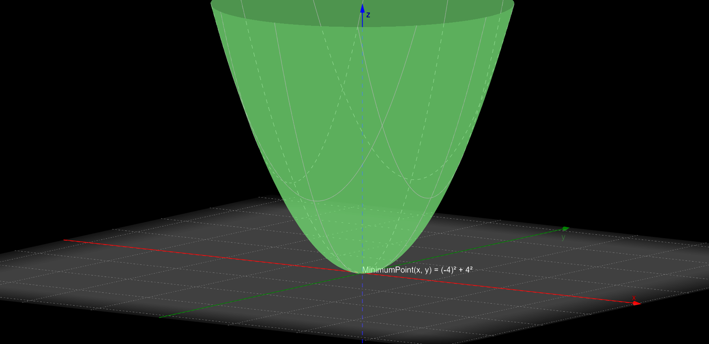
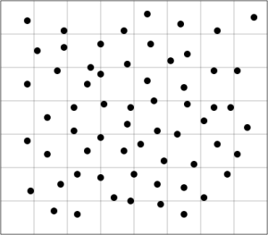
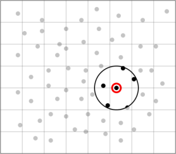
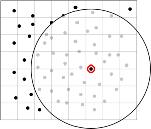
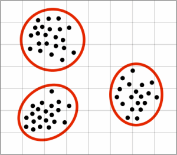
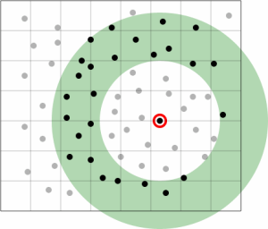
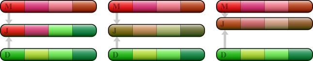

Optimization
According to the Merriam-Webster dictionary optimization is “an act, process, or methodology of making something (such as a design, system, or decision) as fully perfect, functional, or effective as possible
specifically: the mathematical procedures (such as finding the maximum of a function) involved in this”
Analytical Solutions
Mathematically (using differential calculus) we could solve an easy problem such as: Two numbers whose product $xy=-16$, and the sum of their squares $S(x)=x^2+y^2$ is at it's $Minimum$. We want to solve for one variable $$y=\frac{-16}{x}$$ If we substitute $y$ into $S(x)$: $$S(x)=x^2+\frac{-16}{x}^2$$ $$S(x)=x^2+\frac{256}{x^2}$$ A function is at it's local $Maximum$ or $Minimum$ point when it's derivative $S^{\prime}(x)=0$ $$S^{\prime}(x)=2x+(-2)(256)^{-3}=0$$ $$S^{\prime}(x)=2x-512^{-3}=0$$ $$S^{\prime}(x)=2x=512^{-3}$$ $$S^{\prime}(x)=2x^4=512$$ $$S^{\prime}(x)=x^4=256$$ If we use the natural logarithm $\ln$ to solve for $x$ $$\frac{\ln(256)}{\ln(4)}\pm4$$ $$y=-4\lor{y=4}$$ To get $x$ $$y=\frac{-16}{x}$$ $$xy=-16$$ $$x=\frac{-16}{y}$$ $$x=\frac{-16}{-4}=4\lor{x=\frac{-16}{4}=-4}$$ To prove we are at a $Minimum$ we compute the second derivate of $S^{\prime\prime}(x)$ to check if we are concave upwards $\cup$ or concave downwards $\cap$ $$S^{\prime\prime}(x)=2+1536x^{-4}$$ $$S^{\prime\prime}(4)=2+1536\cdot\frac{1}{256}$$ $$S^{\prime\prime}(4)=8$$ $8$ is a positive number, so $x=4$ is positive upwards $S^{\prime\prime}(4)=\cup$ meaning we are at a $Minimum$ Why does this work? The derivative $f^{\prime}(x)$ of a function gives us the slope/tangent, that means that when the function's slope is at $0$, we are at a local minimum or maximum.
Image by Felipe Gutiérrez using GeoGebra 
In the example above, we are only dealing with one variable $x$ (although we are solving a two variable problem we are substituting to only solve for one variable), but what happens if we have a function that we want to optimize that has more than one variable?
We need multi-variable calculus, and that means we need to use partial derivatives $\frac{\partial f}{\partial x}$ to evaluate the tangent of the function at each input. If we want to solve the problem above $x^2+y^2$ with the constraints $xy=-16$ we can use Lagrange multipliers to minimize or maximize the functions according to the constraint $\lambda$.
The intuition for the Lagrange multipliers is best explained by this image:
Image by Wikipedia user Nexcis
The red curve shows the constraint $g(x, y) = c$. The blue curves are contours of $f(x, y)$. The point where the red constraint tangentially touches a blue contour is the maximum of $f(x, y)$ along the constraint, since $d1 > d2$.
Let's solve the same problem $S(x,y)=x^2+y^2$ with constraint $g(x,y)=xy=-16$ with Lagrange multipliers
First we have to state the problem in terms of the Lagrangian $\mathcal{L}(x,y,\lambda)$, where $\lambda$ means that the gradient of $g(x,y)$ and $S(x,y)$ are proportional.
$$\mathcal{L}(x,y,\lambda)=x^2+y^2-\lambda(xy-(-16))$$
$$\mathcal{L}(x,y,\lambda)=x^2+y^2-{\lambda}x-{\lambda}y-{\lambda}16$$
Now we need to find the partial derivatives of each of the inputs of our function $\mathcal{L}(x,y,\lambda)$ to find $\lambda$
$$\frac{\partial \mathcal{L}}{\partial x}=2x-\lambda$$
$$x=\dfrac{\lambda}{2}$$
$$\frac{\partial \mathcal{L}}{\partial y}=2y-\lambda$$
$$y=\dfrac{\lambda}{2}$$
We know substitute our partial derivatives $\frac{\partial \mathcal{L}}{\partial x}$ and $\frac{\partial \mathcal{L}}{\partial y}$ into the constraint function $g(x,y)$
$$g(x,y)=xy=-16$$
$$\dfrac{\lambda}{2}^2=-16$$
$$\dfrac{\lambda}{4}=-16$$
$$\lambda^2=-64$$
$$\lambda\pm\sqrt{64}$$
$$\lambda\pm8$$
Having solved $\lambda$ we can plug the value into $\frac{\partial \mathcal{L}}{\partial x}$
$$\frac{\partial \mathcal{L}}{\partial x}=\dfrac{-8}{2}=-4\lor{\dfrac{8}{2}=4}$$
And into $\frac{\partial \mathcal{L}}{\partial y}$
$$\frac{\partial \mathcal{L}}{\partial y}=\dfrac{-8}{2}=-4\lor{\dfrac{8}{2}=4}$$
We know we want to get $-16$ from $g(x,y)=xy$ so we have to choose either
$$x=4$$
$$y=-4$$
$$\lor$$
$$x=-4$$
$$y=4$$
We can also check with a higher order partial derivative, to see if we are $\cup$ or $\cap$
$$\frac{\partial^2 \mathcal{L}}{\partial x^2}=2$$
$$\frac{\partial^2 \mathcal{L}}{\partial y^2}=2$$
As both second order partial derivatives are $\cup$ we are at a minimum.
We could also compute the Hessian to test our result, but let's leave that as an excercise for the reader.
We can use this technique to optimize more inputs and even more constraints.
To recap, we have done analytical (through algebraic manipulation) optimization. This is very handy if we have a problem that we have already approximated as a function and even a constraint that we also have approximated as a function. But there are cases in which we don't have a function that defines the problem, matter of fact it is generally easier to create a function that tests whether the answer is right or wrong (there are many names to this types of functions, fitness/cost function are some of them), this is actually the way that problems are ranked in computer science according to their complexity classes.
Numerical Solutions
Computers are excellent at iterating as they are fast at crunching numbers. So sometimes a numerical approach at optimization seems sound.
There are many techniques for iterative numerical optimization, but we are going to look at the following heuristics (a heuristic (from Greek εὑρίσκω "I find, discover") is a technique designed for solving a problem more quickly when classic methods are too slow, or for finding an approximate solution when classic methods fail to find any exact solution.) Gradient Descent, Simulated Annealing and Evolutionary Algorithms.
Gradient Ascent/Descent
Gradient ascent/descent is an optimization algorithm that minimizes/maximizes the cost function of another algorithm by modifying the parameters of the given algorithm. It works by taking steps toward the positive/negative of the gradient to find local minima/maxima.
It is widely used to optimize the parameters of machine learning algorithms.
Let's visualize the algorithm on ${\displaystyle F(x,y)=\sin \left({\frac {1}{2}}x^{2}-{\frac {1}{4}}y^{2}+3\right)\cos \left(2x+1-e^{y}\right).}$
.png)
.png)
The red line is the "path" that the algorithm is taking, as you can guess, smaller step size generally means a better run.
The problem with this heuristic is that the solution probably won't be the global optima, but a local optima. One variant of this algorithm, Stochastich Gradient Descent or (SG) can escape local maxima/minima by the randomness introduced between "tracks" or iterations. However the "step size" (Learning Rate or (LR)) has to be tweaked according to the problem for full convergence.
Simulated Annealing
SG is actually very similar to Simulated Annealing or (SA), the difference is that instead of a "Learning Rate" or "Gamma", we refer to a "Temperature".
The temperature variable is inspired by the process used in metallurgy to heat into a melted state the material and then cool it slowly to increase the size of crystals while reducing the number of imperfections.
We use a probability function $A=\exp{ ( -\Delta f/kT)}$ to accept a state. Where $\Delta f$ is the rate of change from the energy of the previous iteration to the current one ($E_{current}-E_{previous}$), $k$ is the Boltzmann constant and $T$ is the temperature (that is decreased every iteration, when this reaches the desired threshold it will also act as an exit condition for the iteration loop).
Here's a visualization of the process stolen from wikipedia

When the temperature is hot, the algorithm can shuffle much more. When the temperature is cool, the algorithm will not shuffle/randomize that much allowing it to find the local optima of the peak it's at.
After running multiple "tracks" or iterations, we can almost be sure, that if the cost/fitness function was properly setup, we would arrive at an approximate global optima.
Evolutionary Algorithms
There has been active research in genetic algorithms from the 1960's and they have been widely used by STEM professionals over the years to solve problems with many variables. Although there are a lot of implementations of Genetic Algorithms, we are going to use David Rutten's one as we are mostly concerned with CAD/CAE problems and the Galapagos solver is embedded in Grasshopper for Rhino3d, which is a great 3D tool that enables even non-programmers to program through visual scripting. Note that although Gradient Ascent/Descent is not implemented in Grasshopper, Simulated Annealing is in fact an extra solver in the Galapagos component.
Rutten states that his solver consists of four mechanisms
Selection
When the genetic algorithm runs, it has to go somewhere from the results it has received.
Selection roughly means that from the Fitness (don't worry we will dive deeper into what a Fitness function means and how to create one) we are going to pick the best results to continue for the next round.
The term comes from the biological term Natural Selection, in which only the best offsprings will get the chance to reproduce.
Coupling
If we are dealing with a natural inspiration for our algorithm, coupling will literally mean the process of mating.
The gene map (or our representation) of our fitness function can have many dimensions, so a real representation is impossible. But we can approximate some projection into a 2D world
Image by David Rutten

According to our "Gene Map" we can define two types of mating:
Incestous:
Means that we choose partners that are very much like us
Image by David Rutten

Or if you like graphic representations, that are "close" enough to us in the "Gene map".
Incestous behaviour prevents the algorithm to "explore" different possibilities and can give an erronous local minima/maxima solution.
Zoophilic:
Means the opposite of incestous, or in other words, that are either far away in the "Gene map" or that are really different from us
Image by David Rutten

Extreme zoophilic behaviour can also damage the chances of finding an optimum solution as the incompatibility of the genomes can give a result that is not near any local optima.
Image by David Rutten

Imagine extremely zoophilic behaviour on the graph above, we would end up in solutions that are not even close to any local optima.
Having an understanding of zoophilic and incestous behaviour, it seems like the lesser of the two evils is to find a spot between the two of them
Image by David Rutten

Coalescence
Once the coupling phase has been achieved, we need to define a way in which we would recombine the genes of the selected genomes.
Image by David Rutten

We can go "nature's way" and recombine genes in a "Crossover" fashion (the first image on the left), this is a good option if the genomes are already similiar, if they are not, we risk creating a genome in which the genes do not produce a better fitness.
Or we can go the "silicon's way" and do some interpolation to the values (the second image from the left) and we can even add some "weight" to the genes so that we end up with a "Preferenced-blend" of the genomes.
Mutation
The techniques mentioned above tend to get stuck at local optima as they reduce the diversity of the genes, so by adding randomness to the solver, we are giving the algorithm the "explorative" means to seek for the global optima.
Fitness/Cost functions
Imagine you are a little kid playing with your friends, you are blind-folded and the game consists of you getting to one specific place (let's say you want to get to the kitchen). The specific place is the global optima, your friends are telling you how "cold" or "hot" you are in relationship to how close to the kitchen you are (this is the output from the fitness/cost function). If your friends like binary states "hot" and "cold", it would be very hard to tell how close you really are to the kitchen, but if they tell you (let's pick an arbitrary scale to clarify a little from $0^{\circ}$ to $100^{\circ}$) that you are at $90^{\circ}$ you can move one step to left and ask again, if you are at $95^{\circ}$ now, you continue in the same direction, otherwise you pick another direction, for example, to the right.
Let's solve a more practical problem (this is a simple kind of packing with regular convex shapes, it has applications in the industry for minimizing the amount of material used when cutting), we want to place some rectangles on the inside of another rectangle
Video by Felipe Gutiérrez using Rhino3d/Grasshopper
This is a dummy test, we are only concerned that the rectangles are inside the bin (the sheet) and that the rectangles do not overlap.
Download the
Grasshopper file.